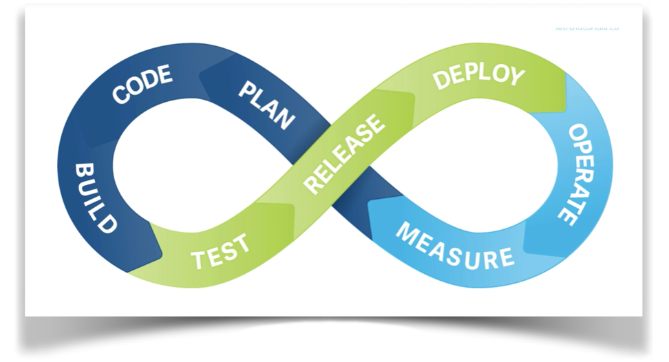
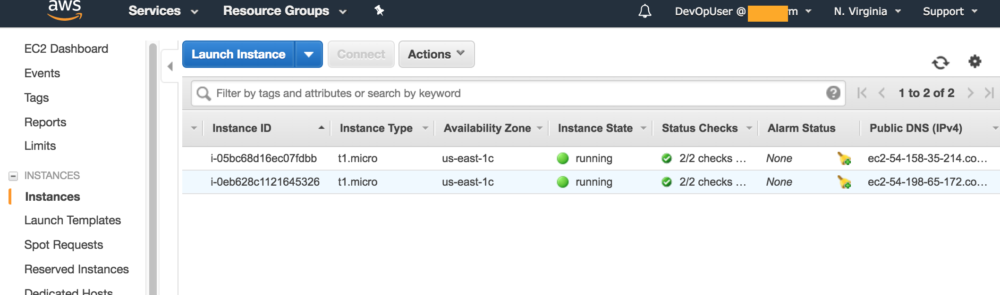

 In the last post we created a limited-rights IAM user that we’ll use in this post and in future posts to create different infrastructure resources on AWS Cloud. We can defintely use the account to login into AWS Management Console, and create and manage resources, but that would be too tedious for not-too-small project, and more importatnly against the philosohpy of DevOps. In DevOps philosophy we’d like to automate everything, including creating infrastrure using code. In this post, we’ll see how we can create few EC2 intances, create SSH key pairs, and Security Group to controll access to the EC2 instances- all using code. We’ll login into the AWS Management Console to verify that everything is created as expected.
AWS CLI
To access AWS services programmatically we need to install a piece of software from Amazon, AWS CLI. AWS CLI is written in Python, and is available as a Python package. Depending on the operating system, the instructions for downloading and installing AWS CLI is different. But for Linux/MacOSX users, the process is straight-forward:
$ sudo pip install awscli
Once installed, we can use the tool to interact with the AWS. For example, the command
$ aws ec2 describe-instances
will fetch a list of all instances. However, for this command to succedd, we have to configure AWS-CLI with the IAM user we created. The configuration is done using the command $ aws configure, and then providing the AWS Access key ID and AWS Secret Access key. These two pieces of information are found in the credential file we downloaded and copied in our DevOps folder. There are two other optional information to provide: default region and default output format. The region is the Amazon geographic region we want to use by default, and the output format is the format of information we’d like AWS to provide us in return when we exectue an aws command.
To verify if the user is good to go, we can issue the command: $ aws ec2 describe-instances. It should come back with a list of EC2 instances I might have in that default region.
Creating SSH Key Pairs
We’ll need to create two EC2 instances, that we’ll use down the way for ansible. Before creating any EC2 instances, we’ll have to create keys for SSH access to these nodes password-free. Creating a key pair is easy, just issue $ aws ec2 create-key-pair and provide a name for the key. The important thing is however noting the private key created. We must copy (using mouse to select) the private key and save into our own desktop/laptop for further use. The following commands crate the keys we need. I called them:
AnsibleControllerKey and HostForAnsibleKey.
$ aws ec2 create-key-pair --key-name AnsibleControllerKey $ aws ec2 create-key-pair --key-name HostForAnsibleKey
One nuisence in copying and pasting the private key is the \n character. The console adds them for readability
but we must remove them in the file. I saved the keys with names: AnsibleControllerKey.pem and HostForAnsibleKey.pem, in the DevOps folder. I also must make them non-readable to other users (Unix permission 400) using the command chmod 400 AnsibleControllerKey.pem and chmod 400 HostForAnsibleKey.pem
Though we have interacted with the AWS cloud directly using the AWS CLI command terminal, this is only suitable for small number of items. If we had to create a say one hundred key pairs, we would have never done that manually. In that case, someone would write a script, either shell or Python.
Creating Infrasture using Codes
AWS CloudFormation service facilitates automated creation and management of infrastructure. The architectural configuration of the desired infrastructure is specified in either JSON or YAML format. From that configuration, CloudFormation can create the whole infrastructure, initialize OS, help install package etc so that the environment is ready to run an application. In technical term, the configuration settings are called a stack, and AWS offers predefined stack template for stacks for many common purposes. In addition, it offers a simple GUI based template builder/editor called CloudFormtion designer. There is a second tool called CloudFormer that can trawl through the instances etc already created in the AWS, and build a template based on these. And offcourse, it is possible to build a template from scratch.
Creating Stack Template using Troposhpere
To programmatically create a stack template, Python has a package troposphere available. To install:
$ sudo pip install troposphere
We then write the following script that will help us generate a stack template:
"""Generating CloudFormation template"""
from ipaddress import ip_network
from ipify import get_ip
from troposphere import (Base64, ec2, GetAtt, Join, Output, Parameter, Ref, Template)
ApplicationPort = "3000"
sgAnsible = ec2.SecurityGroup("SecurityGroup1", GroupDescription="SG for ansible controller",
SecurityGroupIngress=[
ec2.SecurityGroupRule(
IpProtocol="tcp",
FromPort="22",
ToPort="22",
CidrIp="0.0.0.0/0"
)
]
)
instanceAnsibleController = ec2.Instance("AnsibleController", ImageId="ami-c998b6b2",
InstanceType="t1.micro", SecurityGroups=[Ref(sgAnsible)],
KeyName='AnsibleControllerKey')
sgHost = ec2.SecurityGroup("SecurityGroup2", GroupDescription="SG for host",
SecurityGroupIngress=[
ec2.SecurityGroupRule(
IpProtocol="tcp",
FromPort="22",
ToPort="22",
CidrIp="172.33.0.0/16"
),
ec2.SecurityGroupRule(
IpProtocol="tcp",
FromPort=ApplicationPort,
ToPort=ApplicationPort,
CidrIp="0.0.0.0/0"
)
]
)
instanceHostForAnsible = ec2.Instance("HostForAnsible", ImageId="ami-c998b6b2",
InstanceType="t1.micro", SecurityGroups=[Ref(sgHost)],
KeyName='HostForAnsibleKey')
t = Template()
t.add_description("CloudFormation Template")
t.add_resource(sgAnsible)
t.add_resource(sgHost)
t.add_resource(instanceAnsibleController)
t.add_resource(instanceHostForAnsible)
t.add_output(Output(
"Instance1PublicIp",
Description="Public Ip of our ansible controller instance.",
Value=GetAtt("AnsibleController", "PublicIp")
))
t.add_output(Output(
"Instance2PublicIp",
Description="Public Ip of our host instance.",
Value=GetAtt("HostForAnsible", "PublicIp")
))
print(t.to_json())
The code above contains statements to create two appropriate security groups, and then two EC2 instances. For the instance AnsibleController we allowed only SSH on port 22 from anywhere. Howeve, the actual application host node instanceHostForAnsible allows SSH on port 22 only from the controller host. It however allows tcp traffic on port 3000, that our application will serve.
We save the Python script as cf-template.py and then run from the termnial $python cf-terminal.py. It should spash out some JSON. Redirecting the output $python cf-template.py > cf-template.tpl gives the template file that we are going to use with CloudFormation.
Once we have the template file, we log into the Maganagement Console, and select CloudFormation service. Click on Create Stack, then choose Upload a template to Amazon S3 and select our template file. Clicking Next and then giving the stack a name takes to Options page. One more click on next button brings a summary of the template. Hitting the Create button starts craeting the EC2 instances, and the security group related to them.
To verify, we go to the EC2 dashboard and click on Instances: 
We can also verify the security groups if wished.
Few things to remember:
- The image ID for EC2, amazon machine image (AMI) instances are not the same for different region. It has be the one that we are creating our EC2 instances on. The best way to look for the
amiin trying to launch an EC2 manually from the management console. CloudFormationdoes not (or can not) use existing security groups. The SGs need to be created along with the EC2 from the same stack template.
In next post, I’ll install ansible and setup a small automated build and deployment system.